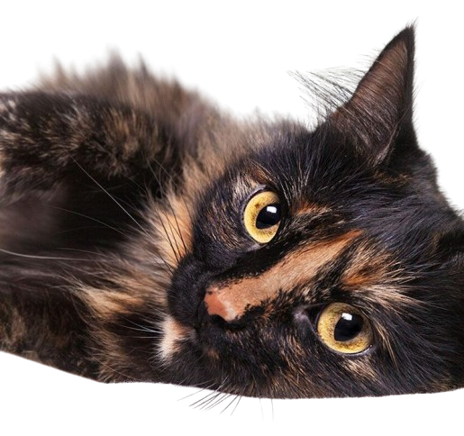

- Carey

- Son independientes, con carácter fuerte, expresivos y muy leales a su persona favorita -
-
Atigrado

- Tienen un instinto cazador muy despierto, son curiosos, juguetones y muy sociables -
-
Arlequin
- Personalidad colorida y alegre. Suelen ser gatos muy activos, traviesos y cariñosos -
-
Van

- De naturaleza tranquila. Les encanta estar en las alturas, vigilan su entorno -